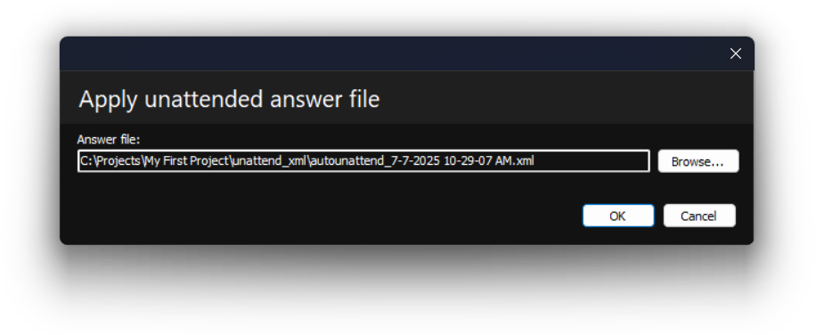
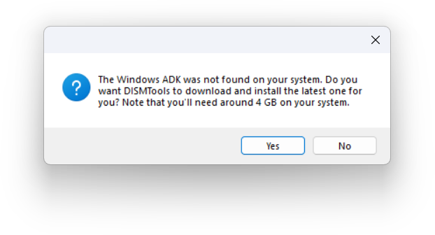
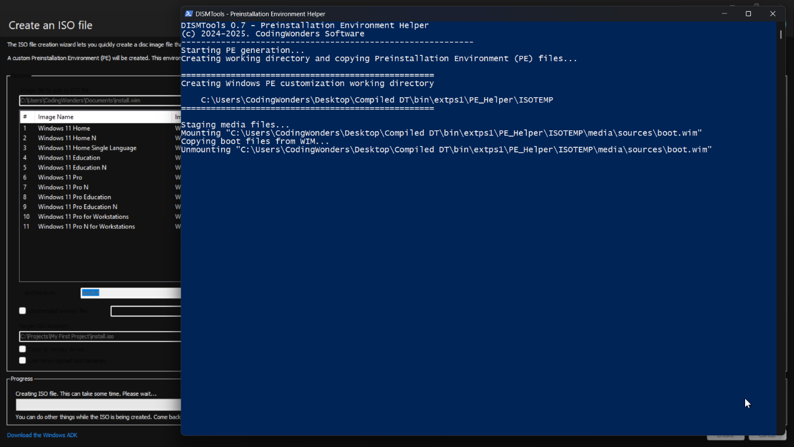

Installiamo la tua immagine di Windows su alcuni computer?
Accelerare il processo di installazione
Uno dei requisiti è che tutti i computer abbiano un account locale chiamato "John Doe". Un altro requisito è saltare quante più domande possibile nella OOBE. Tutto questo può essere completamente automatizzato con un file di risposta non presidiato. Per iniziare a crearli, puoi usare la procedura guidata. Per accedervi, vai su Strumenti e poi clicca su Creazione file di risposta.

Nota:
Potresti vedere la seguente finestra di dialogo quando inizi questo compito:

Questo può accadere se non hai il runtime desktop .NET 9, che è un requisito per il programma sottostante che genera i file di risposta. Puoi procedere in 2 modi: scaricando il runtime desktop .NET 9, oppure lasciando che DISMTools scarichi la versione self-contained dopo aver cliccato Sì.
Nota inoltre che il requisito sul runtime .NET potrebbe cambiare in futuro se il componente sottostante dovesse richiedere una nuova versione del runtime.
Poi puoi seguire i passaggi della procedura guidata. Alla fine avrai un file di risposta non presidiato e arriverai a questa schermata:

In questa schermata puoi eseguire altre operazioni con la procedura guidata, come crearne un altro file di risposta o aprirne la posizione. L'operazione a cui siamo interessati è applicare il file di risposta. Clicca il terzo link e poi OK in questa finestra:
Infine, salva le modifiche. Ora creeremo il file ISO.
Creazione del file ISO
Per iniziare la creazione dell'ISO, vai su Strumenti e poi clicca su Crea immagine disco...

Nota:
Questa operazione richiede il Windows Assessment and Deployment Kit (ADK). Se DISMTools non lo rileva, ti verrà data l'opzione di scaricare e installare automaticamente l'ultima versione.
Questo può richiedere del tempo, durante il quale vedrai alcune informazioni di avanzamento:

Dopo l'installazione puoi procedere normalmente.
Vedrai la seguente finestra:

In questa finestra dovrai seguire questi passaggi
-
Scegli la tua immagine di Windows. Puoi sceglierla usando uno dei 3 pulsanti che trovi in alto:
- Sfoglia... ti permette di specificare un'immagine di Windows in qualsiasi posizione
- Seleziona... ti permette di scegliere un'immagine tra tutte le immagini montate. Vedrai una lista dalla quale selezionarla
- Usa immagine montata userà l'immagine su cui stai lavorando attualmente
- Scegli una destinazione per il tuo file ISO
- Clicca Crea. Nota che, se il file ISO di destinazione esiste, verrà sovrascritto; e che devi assicurarti che l'immagine di Windows abbia tutte le modifiche salvate
Per riassumere questi passaggi, ecco un'immagine che li illustra:

Questi sono i passaggi essenziali. Puoi configurare altro, come la copia su unità Ventoy, se vuoi. In questo esempio continueremo con le impostazioni predefinite. Dopo aver cliccato OK apparirà una nuova finestra. Questa finestra creerà il file ISO che potrai usare in seguito:
Questo richiederà un po' di tempo, quindi sentiti libero di fare altro. Dopo la creazione puoi usare il tuo file ISO. Puoi:
- Usare il file ISO in una macchina virtuale
- Scriverlo su una chiavetta USB con Rufus
- Copiarlo su un'unità Ventoy
Continueremo installando il sistema operativo in una macchina virtuale.
Installazione del sistema target
Per farlo, avvia il sistema dall'ISO:

Poi, segui i passaggi della procedura di installazione:

Nota:
Scegli con attenzione il disco o il volume di destinazione poiché potresti cancellare tutti i file al suo interno. Prendi anche nota dell'indice dell'immagine che stai modificando nel caso l'immagine abbia più indici.
Il sistema target dovrebbe essere pronto a breve. Ci vorrà un po' di tempo, a seconda della velocità del tuo computer. Questi sono i risultati che dovresti ottenere con la tua immagine di Windows:

Questa è un'immagine composita in cui l'unica modifica è lo sfondo. Dovresti comunque vedere il resto delle modifiche.
Considerazioni finali
Se hai un laboratorio di computer e vuoi distribuire questa immagine su più computer contemporaneamente, puoi optare per un'installazione basata sulla rete. Anche se questo Tour non lo coprirà, puoi comunque imparare come farlo consultando la documentazione della Guida.
Nota:
Al momento DISMTools supporta solo Windows Deployment Services, e la guida nella documentazione della Guida è pensata per questa soluzione di distribuzione.
Congratulazioni! Hai completato il Tour
Puoi ora continuare a personalizzare e testare la tua immagine di Windows, oppure avviare un nuovo progetto con una nuova immagine. Le possibilità sono infinite. Se ti perdi o vuoi saperne di più su cosa offre DISMTools, non esitare a consultare la documentazione della Guida. Puoi anche aprire il Tour in qualsiasi momento.